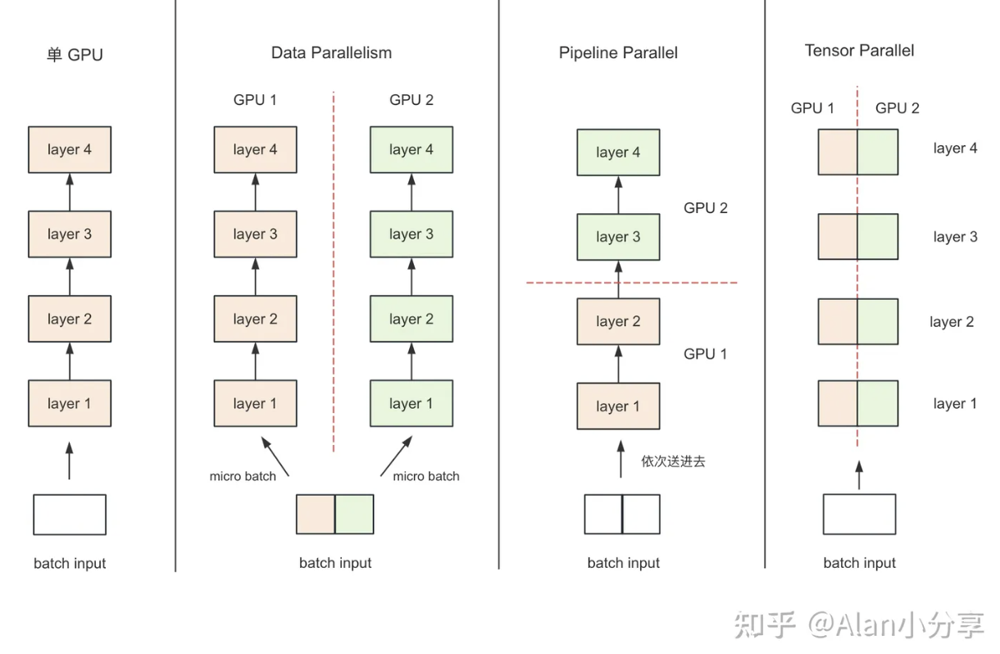
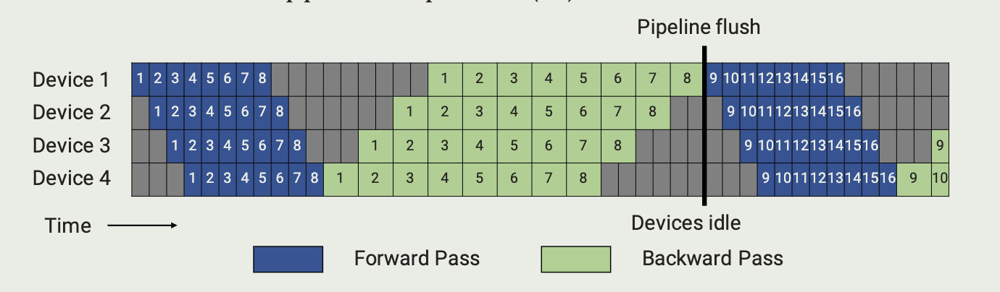
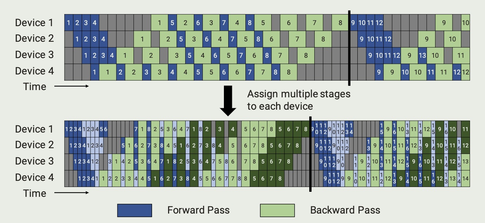
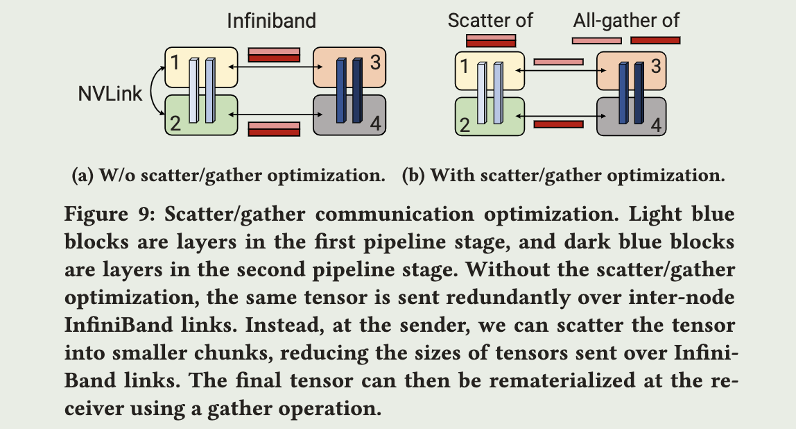

Megatron-LM
2024-4-16
Paper:
Megatron-LM: Training Multi-Billion Parameter Language Models Using Model Parallelism
Efficient large-scale language model training on GPU clusters using megatron-LM
Introcution
NVIDIA Megatron-LM is a distributed training framework based on PyTorch, used to train LLMs based on Transformer. Megatron-LM comprehensively applies data parallelism, tensor parallelism and pipeline parallelism.
Parallelism
Data Parallelism
Data Parallelism (DP)
- Each GPU load the complete model
- Split batch to \(\)N\(\) (the number of GPU) micro-batch and each GPU get a micro-batch
- Each GPU performs complete operations and send the gradient to server:
- server: dedicated to receiving the gradients, adding them up and sending to each GPU
- Update the parameters in each GPU
Distributed Data Parallelism (DDP)
PyTorch Distributed: Experiences on Accelerating Data Parallel Training
At step 3, no longer use a dedicated node to perform these operations, as this would make the bandwidth of node a bottleneck, instead, the ring all-reduce is used to enable each node to participate the process
See ring all-reduce’s mathematical property
ZeRO (Intro)
At step 1, instead of loading the complete model in each GPU, the parameters are split to \(\)N\(\) parts so that each GPU can only store partial parameters and obtain the complete patameters through all-gather when needed
Model Parallelism
memory usage and computation is distributed across multiple workers
There are two further paradigms:
- (TMP) Tensor Model Parallelism
- (PMP) Pipeline Model Parallelism
Model Parallel Transfromers
TMP Transformer
MLP

Self-attention

Split by column parallel, use all-reduce after all operations
Embedding
parallelize the input embedding weight along the vocabulary dimension \(E=[E_1,E_2]\) and fuse the \([XE_1,XE_2]\) with cross entropy loss
PMP Transformer
GPipe
In this example, divide transformer in 4 group evenly and assign each group to a device, and each batch consists of 8 microbatches
i.e., 16 transformer layer, Device 1: \(layer_{0\to3}\) ...
For convenience:
- \(p\): pipeline stage, the number of layer group which is the same as the device
- \(m\): the number of microbatches
- \(t_{id}\): time of ideal iteration
- \(t_{pb}\): time of pipeline bubble
- \(t_f\): time of forward pass in single microbatch execution
- \(t_b\): time of backward pass in single microbatch execution
- btf: bubble time fraction
GPipe proposes a schedule where the forward passes for all microbatches in a batch are first executed, followed by backward passes for all microbatches
To reduce the btf, we need \(m\gg p\), but each device need to stash at least \(m\) activations for backward
Pipedream
Fine adjustments are made to the order of forward and backward, which called 1F1B pipeline schedules
It doesnt reduce the bubble time fraction, however, each device need to stash at most \(p\) activations, which means memory usage no longer linked to \(m\), so we can reduce btf by larger \(m\)
virtual pipeline
We could have each device perform computation for two layers, i.e., Device 1: \(layer_{0\to1,8\to 9}\) ...(GPipe Device 1: \(layer_{0\to 3}\)) so 1 forward pass requires 2 loops
Formally, propose \(v\): virtual_pipeline_stage, which means 1 forward pass requires \(v\) loops in this example
Its memory usage is simliar to PipeDream while:
The result is that btf dropped \(v\) times while communication increased \(v\) times
Optimizations
Comunication Optimizations
On the send side, split the tensor into equal-sized chunks and then only send one chunk to the corresponding rank on the next node
On the receive side, perform an all-gather over NVLink, which is much faster than the InfiniBand Interconnect
Computation Optimizations
- data layout: from \([b,s,a,h]\) to \([s,b,a,h]\) to enable strided batched GEMM
- fused kernels:
- element-wise operations:
- fusion of scale, mask and softmax operations:
(bias + GeLU)
(bias + dropout + add)
one for general masking
another for implicit causal masking